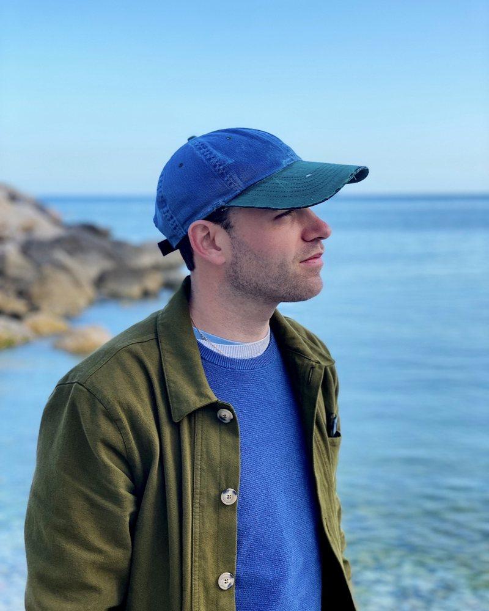
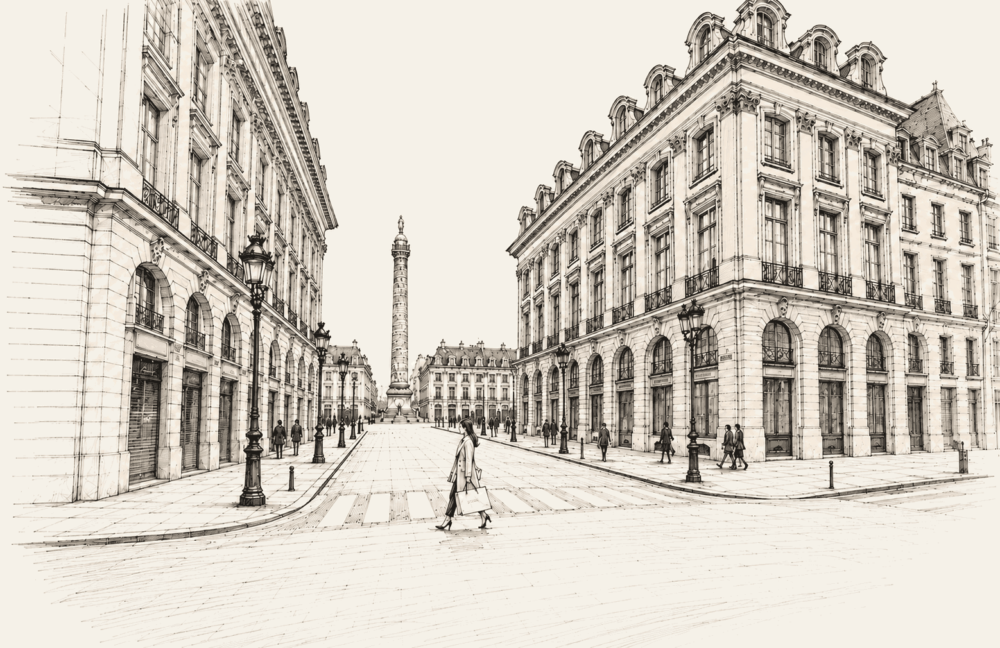

Contact
Contactez DELIGNY R&D
Vous avez un projet de logiciel, un produit à concevoir, une question sur nos prestations ou souhaitez consulter notre book design ?
Présentez-nous votre demande. Vous échangez directement avec le fondateur de l’atelier, qui étudie votre projet et vous répond personnellement.
Si nous ne répondons pas au téléphone, laissez un message vocal ou un SMS : nous répondons au plus vite.

Votre interlocuteur
Baptiste Placier
Président et fondateur de DELIGNY R&D
Ingénieur, directeur de création et développeur, Baptiste Placier réunit plusieurs métiers au sein de son atelier. Il intervient aussi bien dans la conception de produits et leur fabrication que dans le développement de logiciels et d’outils techniques.
En savoir plus
Baptiste Placier est ingénieur designer, entrepreneur et fondateur de DELIGNY R&D, un studio indépendant de design, d'ingénierie et de recherche appliquée, à la rencontre de l'art, des sciences et des technologies.
Diplômé de l'École Supérieure de Design et titulaire d'un MBA en design stratégique du Groupe ESC Troyes, après une formation initiale en génie mécanique et une expérience universitaire en Malaisie, il construit un parcours à la croisée de la création artistique, de la conception technique et du développement de produits. Son approche associe sensibilité esthétique, compréhension des matériaux, maîtrise des procédés de fabrication et exploration des outils numériques.
En 2016, il fonde Deligny Conception, un studio consacré au design et au développement de produits, des collections d'objets aux pièces techniques sur mesure. Parallèlement à ses activités salariées, il réalise des missions de conception en freelance auprès d'entreprises de la région parisienne et développe ses propres créations, commercialisées notamment sur Etsy. Cette expérience lui permet d'aborder le développement d'un objet dans sa globalité, depuis les premières intentions créatives jusqu'à sa fabrication et sa mise sur le marché.
Son parcours professionnel l'amène ensuite à travailler dans l'univers du luminaire technique et architectural chez Specilux. Il y approfondit sa maîtrise de la conception industrielle et des procédés de transformation, notamment le travail du métal, l'usinage, la fonderie, l'injection plastique et l'extrusion. Cette expérience renforce son intérêt pour le dialogue entre forme, fonction, matière et contraintes de production.
Il rejoint par la suite Alain Ellouz Paris, atelier de création spécialisé dans les matériaux d'exception, notamment l'albâtre, le cristal de roche, le métal et le cuir. En tant que responsable technique et chef de projet, il participe au développement de réalisations sur mesure destinées à l'architecture intérieure et aux univers haut de gamme : luminaires monumentaux, installations lumineuses, bars et présentoirs. Il intervient notamment sur des projets destinés au marché américain et à des maisons telles que Cartier et Van Cleef & Arpels.
Au contact des designers, architectes, artisans, bureaux d'études et fabricants, il développe une approche collaborative de la création, où les intentions esthétiques sont confrontées aux propriétés des matériaux et aux possibilités techniques. Il accompagne les projets de leur faisabilité à leur mise en fabrication et contribue à l'évolution des méthodes de production de l'atelier, notamment autour de l'usinage CNC et des outils de conception assistée par ordinateur.
En février 2025, il fonde DELIGNY R&D, prolongement de son parcours et de ses recherches personnelles. Le studio réunit design, ingénierie mécanique, art, fabrication et développement logiciel au sein d'une même démarche créative. Il explore la manière dont ces disciplines peuvent se compléter pour imaginer des objets, développer de nouveaux outils et faire évoluer les méthodes de conception.
Parmi ses recherches figure Paterne, une montre personnalisable associant dessin horloger, conception paramétrique, fabrication additive métallique et savoir-faire d'assemblage. Le projet explore les possibilités de personnalisation offertes par les outils numériques, tout en intégrant les contraintes techniques propres à la fabrication d'un objet de précision.
Cette recherche se poursuit dans le domaine du logiciel. DELIGNY R&D développe ses propres applications de conception, de simulation physique et d'analyse mécanique, ainsi qu'Atlas Studio Pro, un environnement de gestion destiné aux activités professionnelles. L'objectif est de rapprocher les outils de création, les données techniques et les processus de production, afin de rendre le développement de produits plus fluide et plus adaptable.
L'expérimentation artistique constitue également une dimension essentielle de son travail. À travers le dessin, la peinture, la photographie, la création numérique et l'édition indépendante, il explore les relations entre geste, matière, mouvement et technologie. Certaines de ces recherches donnent naissance à des outils spécialement conçus pour expérimenter de nouvelles techniques artistiques, illustrant la continuité entre sa pratique du design, son travail d'ingénieur et sa démarche d'artiste.
Aujourd'hui, son activité s'articule autour d'une même volonté : faire dialoguer l'intuition artistique et la rigueur de l'ingénierie pour concevoir des objets, des expériences et des outils qui ouvrent de nouvelles perspectives.
À travers DELIGNY R&D, il défend une vision du design qui ne se limite ni à l'apparence ni à la fonction, mais considère chaque projet comme un ensemble où la création, la matière, la technique et l'innovation se construisent mutuellement.
Quelques lignes suffisent
Parlez-nous de votre projet.
Décrivez votre besoin et laissez-nous votre adresse courriel. Votre message est lu directement par l’atelier, et nous vous répondrons au plus vite.

Informations professionnelles
DELIGNY R&D
SAS au capital de 1 000 €
231 rue Saint-Honoré, 75001 Paris, FR
SIREN : 107503807, RCS Paris